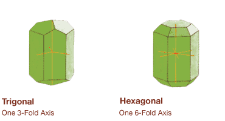
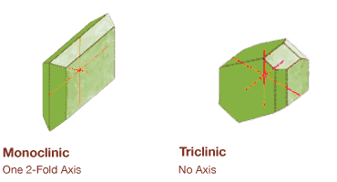
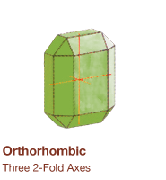
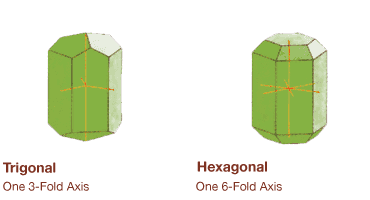
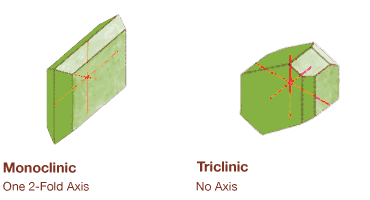
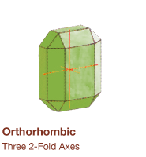

What are Minerals?
Rocks are made of Minerals and minerals are made of elements. Elements are simple substances that cannot be broken down into any other substance. The name of an element is written down as a combination of letters called a symbol, eg: sodium is Na; chlorine is Cl. Salt, a combination of sodium and chlorine is thus written as a formula symbol NaCl. Many minerals are made up of large numbers of elements, so their formulas are complex. The most common minerals are those based on silicon and oxygen, Si04. Minerals are either found in shapeless lumps which we call 'massive' or they can form into the special shapes we recognise as crystals. Most minerals form within the spaces between other minerals and grow into rough shapeless masses. However, if they are able to form freely in a hole or cavity in the surrounding rock the mineral takes the form of a crystal and these crystal lined cavities are called geodes, vugs or pockets.
Every mineral has a unique arrangement of elements within its inherent structure. This arrangement of atoms determines a mineral type. All minerals have a chemical formula, which is an analysis of the types and amounts of elements present in a mineral. Every element has a one or two letter abbreviated term. For example oxygen is "O", and gold is "Au".
Physical Properties:
- Crystal Structure and Habit
- Hardness
- Lustre and Diaphaneity
- Colour and Streak
- Cleavage, Parting, Fracture, and Tenacity
- Specific Gravity
Chemical Classifications:
- Atoms, Molecules, and Elements
- Chemical Formulas
- Chemical Formula Variables
- Variable Formulas
- Radicals
- Hydrous Minerals
- Mineral Series
- Atomical Variations
Mineral Classes:
Silicates
- Tectosilicates
- Phyllosilicates
- Inosilicates
- Cyclosilicates
- Sorosilicates
- Orthosilicates
Non-Silicates
- Native Elements
- Sulfides
- Oxides
- Halides
- Carbonates
- Sulfates
- Phosphates
- role="section"Organic Minerals
What is a Gemstone?
A gemstone or gem (also called a precious or semi-precious stone, a fine gem, or jewel) is a piece of mineral, which, in cut and polished form, is used to make jewelry or other adornments. However certain rocks (such as lapis lazuli), or organic materials that are not minerals (such as amber or jet), are also used for jewelry, and are therefore often considered to be gemstones as well. Most gemstones are hard, but some soft minerals are used in jewelry because of their luster or other physical properties that have aesthetic value. Rarity is another characteristic that lends value to a gemstone. Apart from jewelry, from earliest antiquity until the 19th century engraved gems and hardstone carvings such as cups were major luxury art forms; the carvings of Carl Fabergé were the last significant works in this tradition. In modern times gemstones are identified by gemologists, who describe gems and their characteristics.
Synthetic and Artificial Gemstones
Some gemstones are manufactured to imitate other gemstones. For example, cubic zirconia is a synthetic diamond simulant composed of zirconium oxide. Synthetic moissanite is another example. The imitations copy the look and color of the real stone but possess neither their chemical nor physical characteristics. Moissanite actually has a higher refractive index than diamond and when presented beside an equivalently sized and cut diamond will have more "fire" than the diamond.
However, lab created gemstones are not imitations. For example, diamonds, rubies, sapphires and emeralds have been manufactured in labs to possess identical chemical and physical characteristics to the naturally occurring variety. Synthetic (lab created) corundum, including ruby and sapphire, are very common and they cost only a fraction of the natural stones. Smaller synthetic diamonds have been manufactured in large quantities as industrial abrasives, although larger gem-quality synthetic diamonds are becoming available in multiple carats.
Classifications:
- Value
- Grading
- Cutting and Polishing
- Colour
- Treatment
- Heat
- Radiation
- Waxing/Oiling
- Fracture Filling
Birthstones
January - GarnetFebruary - Amethyst
March - Aquamarine or Bloodstone
April - Diamond
May - Emerald
June - Pearl, Moonstone or Alexandrite
July - Ruby
August - Peridot
September - Sapphire
October - Opal or Tourmaline
November - Topaz or Citrine
December - Turquoise, Zircon or Tanzanite
What are Crystals?
Crystals are solid material in which the atoms are arranged in regular geometrical patterns. The crystal shape is the external expression of the mineral's regular internal atomic structure. Temperature, pressure, chemical conditions and the amount of space available are some of the things that affect their growth. Many crystallise from watery solutions, some from molten rock as during volcanic eruptions when lava cools rapidly.
Dimentional Patterns of Crystals
Each mineral will always form in a range of crystal shapes. Although there are literally thousands of minerals, their crystal shape can be grouped on the basis of their symmetry into seven systems of three dimensional patterns.
 




